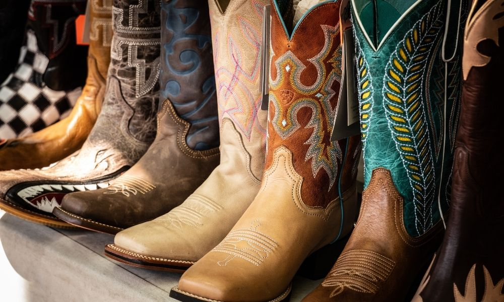
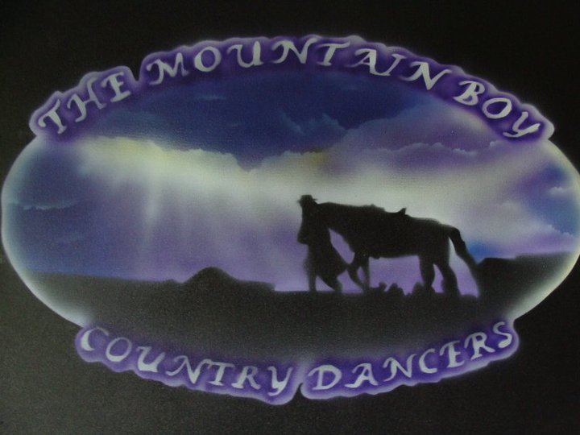
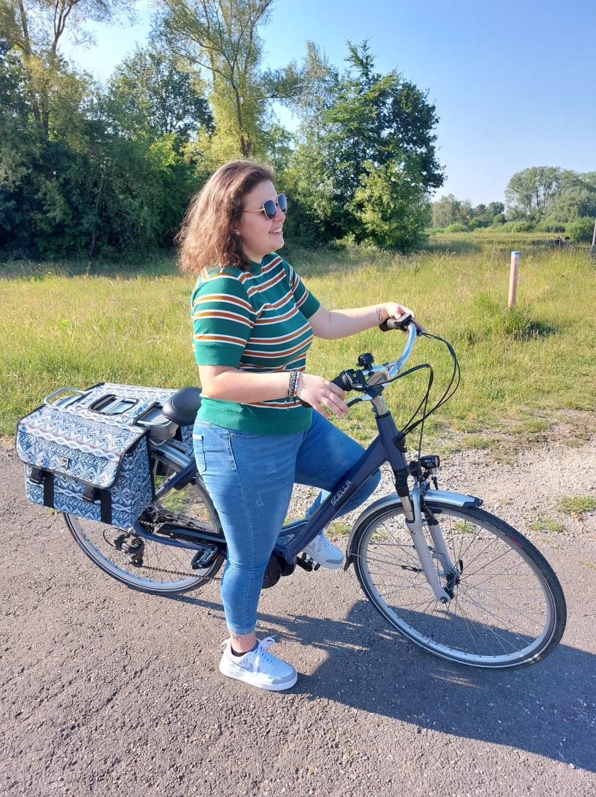
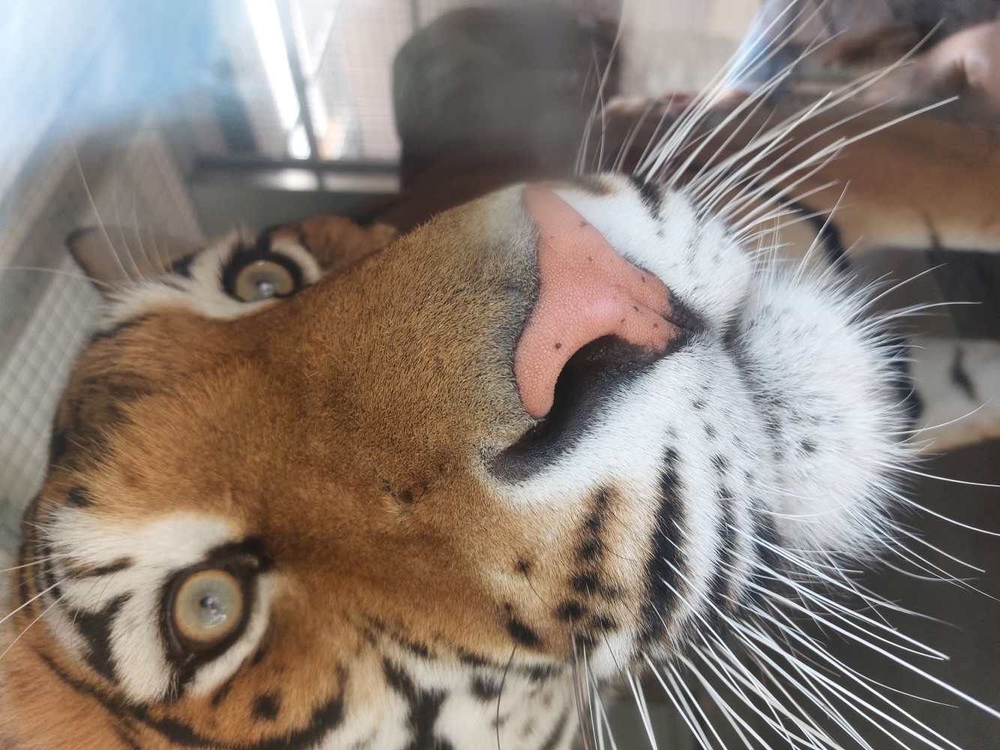
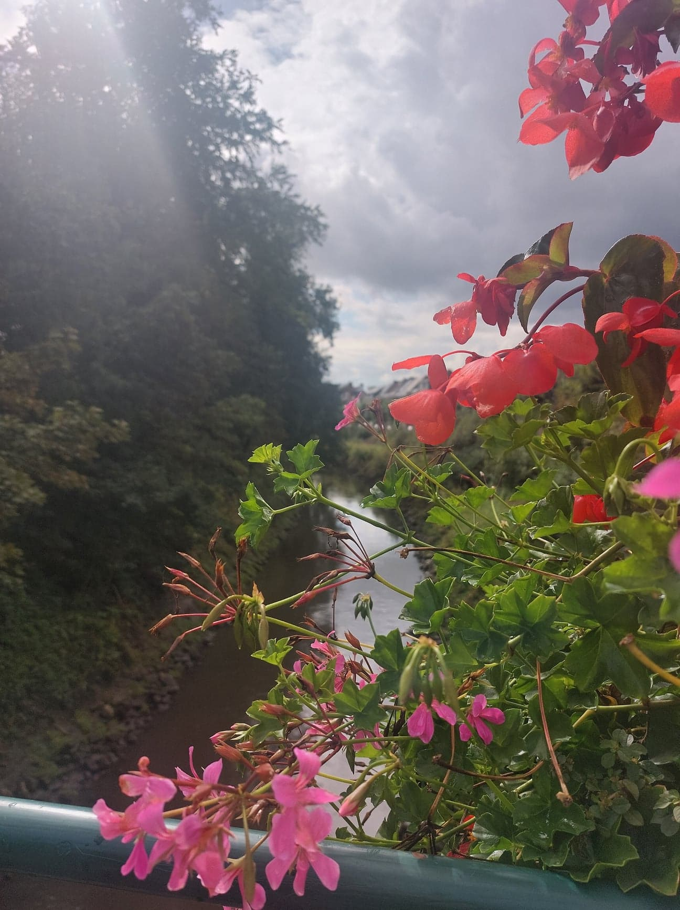
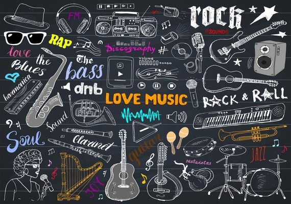

- Country Line Dance
- Fietsen
- Fotografie & bewerking
- Muziek
Country Line Dance
 Country Line Dance is een formatiedans waarbij een groep mensen danst in één of meer rijen, waarbij dezelfde bewegingen worden uitgevoerd. Dit alles gebeurd op countrymuziek.
Z'n zes jaar geleden heb ik dit soort dansen ontdekt dankzij mijn tante. Zij danste bij de groep de Mountain Boy Country Dansers en daardoor ben ik ook bij hen terechtgekomen. Destijds was ik onmiddellijk verkocht na één oefenles. Sindsdien is dit elke dinsdagavond mijn uitlaatklep. Spijtig genoeg ben ik wel al twee keer een paar maanden out geweest door stomme blessures. Eerst één aan mijn knie en vervolgens één aan mijn enkel, maar ondertussen is dit alles opgelost en ben ik weer back on track. Wat ik aan mijn hobby ook echt ontzettend leuk vind is dat dit voor alle leeftijden is, maar ook dat ik cowboyboots kan dragen.
Fietsen
Vroeger vond ik fietsen helemaal niet leuk, maar sinds ik een elektrische fiets heb, is dit toch ook wel één van mijn favoriete dingen om te doen. Zeker als het goed weer is en de zon schijnt. Het is de ideale manier om even van huis weg te zijn en je werkt ook meteen aan je conditie op een aangename manier. Verder kan je op zulke momenten even genieten van de natuur en alles in je hoofd op een rijtje zetten. Voor mij de ideale ontspanning dus.
Fotografie & bewerking
 Ik ben niet iemand die professioneel bezig is met het nemen van foto's, maar het is wel iets dat graag doe. Persoonlijk neem ik al mijn foto's met mijn telefoon. Hoe meer hoe beter. Meestal ben ik ook fotograaf van dienst als we met familie of vrienden iets doen. Wat ik hier nu eigenlijk zo leuk aan vind is dat foto's alles vastleggen van leuke momenten die je graag wilt bijhouden als herinnering later.
Naast het maken van foto's vind ik het heel interessant om te leren hoe je ze bewerkt. Dit door er een filter op te zetten of de juiste belichting toe te voegen.
Nadat ik mijn foto's mooi en netjes genoeg vind en ik wil deze blijvend bewaren, durf ik er wel eens een fotoboek van maken. Dit zodat ze ook tastbaar worden.
De foto's die hierbij horen zijn foto's die ik ook zelf genomen heb.
Muziek
Muziek speelt een belangrijke rol in mijn leven. En nee hoor, ik bespeel geen instrument. Het gaat hier om andere redenen.
Een reden is dat muziek ambiance creëert. Het draagt bij aan de ervaring van wat je ook doet. Een simpel voorbeeld een feestje zonder muziek is toch geen echt feestje of een film zonder soundtrack zou ook niet hetzelfde zijn. Ook zorgt het er ook vaak voor dat mensen worden samengebracht. Een festival, een feestje of een concert zijn plaatsen waar ik samen met familie of vrienden vaak van muziek kan genieten.
De meest belangrijke reden is dat ik van muziek gewoon gelukkig en goed gezind wordt.